O transmissor de nível radar 80G mede nível sem contato, por radar de onda contínua modulada em frequência (FMCW), na faixa de 76 a 81 GHz. Ele alcança até 65 m, com zona morta de apenas 10 cm. A frequência alta e a banda larga garantem medição precisa, e a instalação é simples, com suporte ou rosca.
| Característica | Especificação |
|---|---|
| Faixa de medição | 0,1 a 65 m |
| Precisão | ±1 mm |
| Ângulo do feixe | 6° |
| Frequência | 76 a 81 GHz (FMCW) |
| Alimentação | 14 a 28 Vcc |
| Saída / comunicação | 4-20 mA com HART RS485 Modbus RTU (capítulo "Comunicação RS485 Modbus") VALIDAR: conforme versão |
| Temperatura de operação | -30 a 75 °C |
| Material do corpo | Aço inox ou PP |
| Antena | Lente |
| Cabo recomendado | 0,5 mm² |
| Grau de proteção | IP67 |
| Montagem | Suporte ou rosca |
| Entrada do cabo | PG9 |
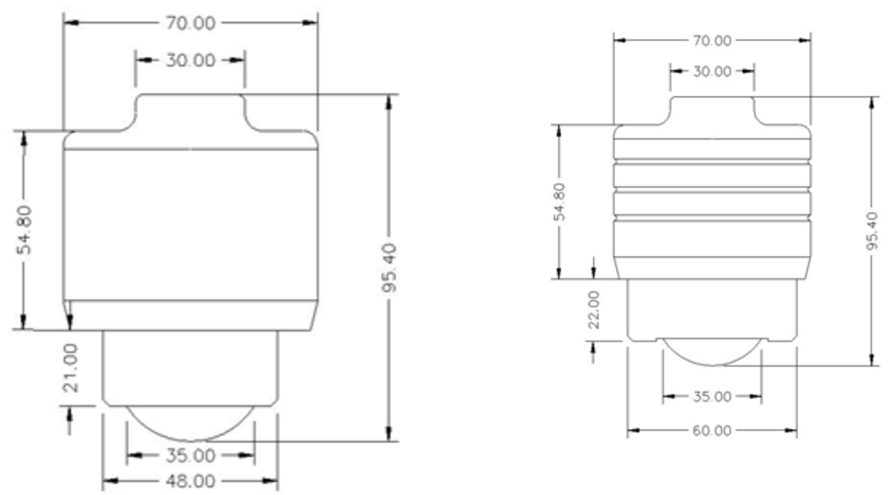
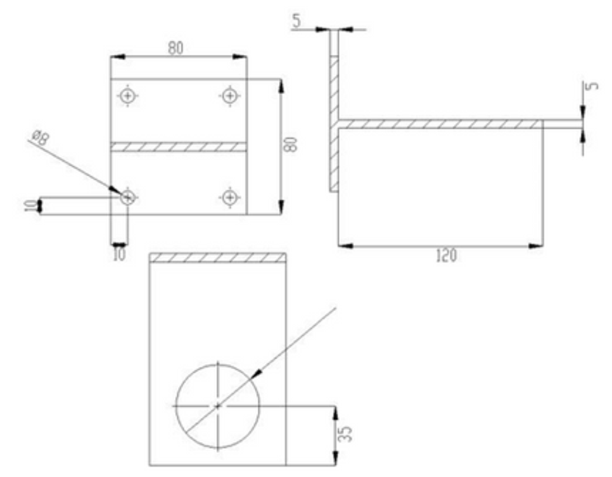
Na instalação, garanta dois pontos: o sensor perpendicular à superfície do líquido e o feixe livre de obstáculos que gerem ecos falsos.
Com o sensor inclinado, o sinal de retorno fica fraco e a medição falha.
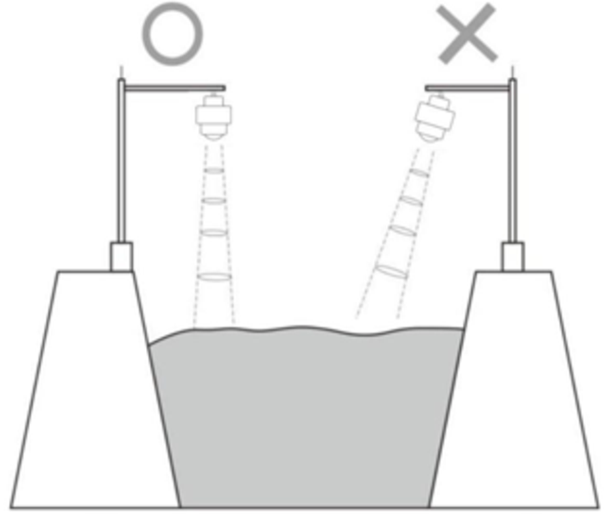
Não deixe objetos dentro do feixe, como as margens de um canal.
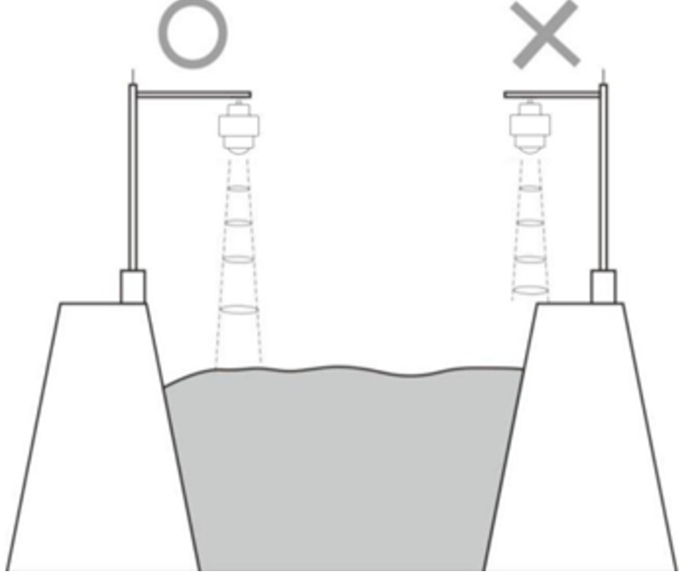
Instale o sensor a pelo menos 20 cm da parede. Em poços, posicione-o o mais perto possível do centro; a parede próxima gera ecos de interferência que atrapalham a medição.
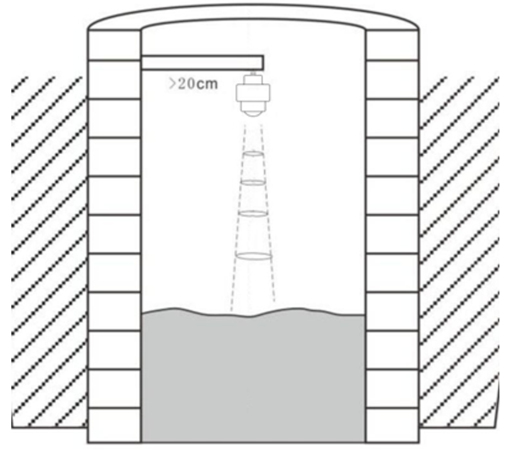
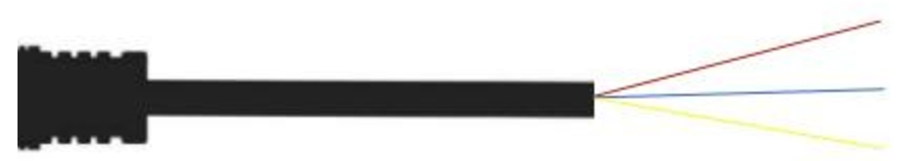
| Fio | Cor | Ligação |
|---|---|---|
| 1 | Vermelho | Alimentação (+) |
| 2 | Azul | Alimentação (−) |
| 3 | Amarelo | Aterramento |
VALIDAR: cores dos fios A e B na versão RS485 Modbus.
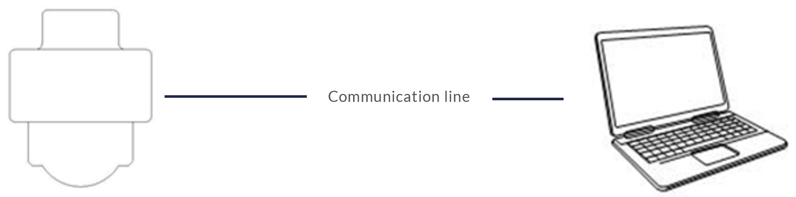
VALIDAR: o manual anterior citava alimentação de 18 a 28 V nesta etapa; a especificação diz 14 a 28 Vcc.
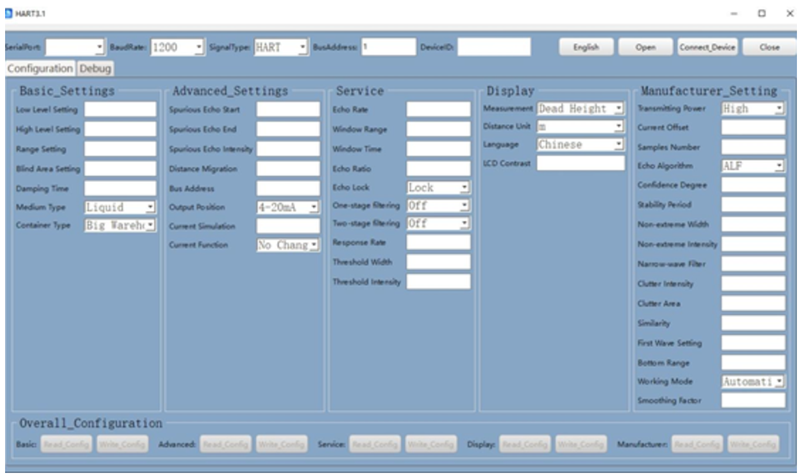
Configure a porta serial na ordem indicada na tela, com velocidade de 1200 bps e sinal HART. Depois de conectar, clique em Read Config para ler e alterar os parâmetros.
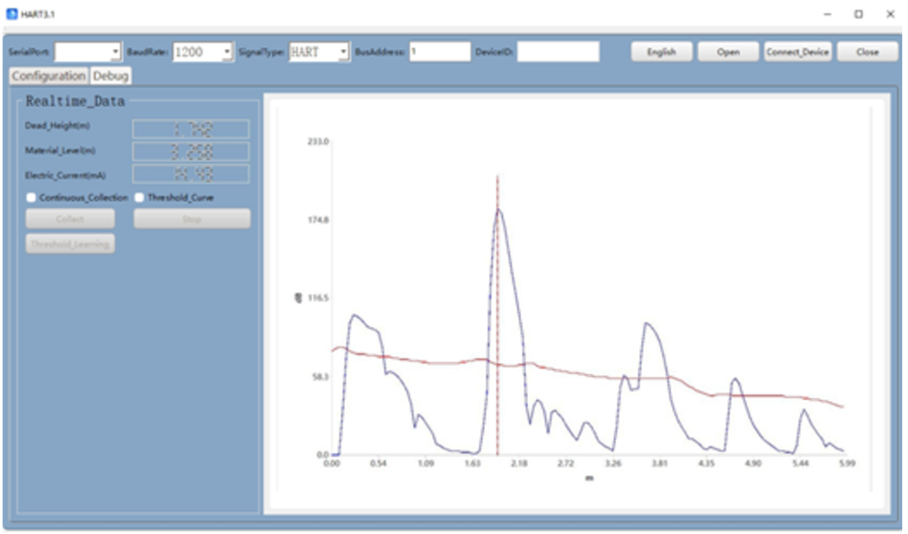
A aba Debug mostra a altura vazia, o nível e a corrente, além da curva de eco, útil para identificar ecos falsos.
O aplicativo fica em inglês no celular.
Ao abrir o aplicativo pela primeira vez, toque no ícone no canto superior direito. A tela lista os equipamentos disponíveis; toque no nome do sensor para conectar e ver ou alterar os parâmetros. O nome Bluetooth do sensor aparece como RFstar-xxxx.
Os parâmetros abaixo são os mesmos no software, no aplicativo e na comunicação Modbus. O registrador de cada um está no capítulo "Comunicação RS485 Modbus".
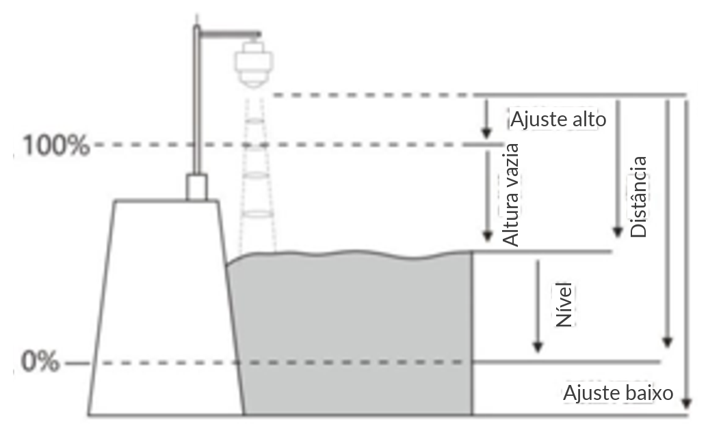
Distância da frente do sensor até o fundo (ponto de 0%). Deve ser menor que a faixa de medição.
| Item | Valor |
|---|---|
| Faixa | 0,1 m até a faixa configurada |
| Padrão | 65 m |
| Regra | Se o ajuste baixo for menor que o ajuste alto + 0,1 m, o equipamento usa ajuste alto + 0,1 m. |
| Observação | Não altera a faixa; afeta só o cálculo do nível. |
Distância da frente do sensor até o ponto de 100%.
| Item | Valor |
|---|---|
| Faixa | 0 até (ajuste baixo − 0,1 m) |
| Padrão | 0 m |
| Regra | Se o ajuste alto for maior que o ajuste baixo − 0,1 m, o equipamento usa ajuste baixo − 0,1 m. |
| Observação | Não altera a zona morta; afeta só o cálculo da altura. |
Ecos além da faixa são ignorados pelo algoritmo. Uma faixa bem ajustada evita reflexões múltiplas e interferências fora da área útil.
| Item | Valor |
|---|---|
| Faixa | 1 a 65 m |
| Padrão | 65 m |
| Regra | Se a faixa for menor que a zona morta + 0,1 m, o equipamento usa zona morta + 0,1 m. |
| Observação | Limita apenas a área do algoritmo. O alcance máximo do equipamento está nas especificações técnicas. |
Ecos dentro da zona morta são ignorados. Use para eliminar interferências perto do sensor.
| Item | Valor |
|---|---|
| Faixa | 0 até (faixa − 0,1 m) |
| Padrão | 0 m |
| Regra | Se a zona morta for maior que a faixa − 0,1 m, o equipamento usa faixa − 0,1 m. |
| Observação | Limita apenas a área do algoritmo, não a distância mínima de medição. |
Corrige o ponto de referência do sensor. De fábrica, a referência é o ponto a. Para mover a referência para baixo, até o ponto b, informe h1; para mover para cima, até o ponto c, informe h2 com sinal negativo. VALIDAR: sinal do deslocamento para cima
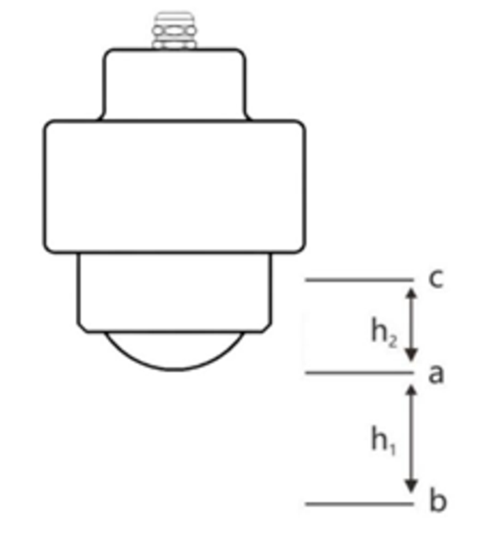
| Parâmetro | Função |
|---|---|
| Tempo de amortecimento | Filtra a medição. Valores maiores deixam a leitura mais estável (0 a 100). |
| Tipo de meio | Líquido ou sólido, com algoritmos próprios para cada caso. |
| Tipo de reservatório | Grande, pequeno, rápido ou teste, conforme a velocidade de enchimento e esvaziamento. |
| Início e fim de eco falso | Faixa de distância em que um eco falso conhecido é ignorado. |
| Modo de medição | Nível do material ou altura vazia. |
| Unidade de distância | m, cm ou mm. |
| Saída de corrente | 4-20 mA ou 20-4 mA; simulação e corrente de falha (22 mA ou 3,6 mA). |
O protocolo é o mesmo nos modelos 80G novos e antigos, para medidores de nível de líquidos e de sólidos. O registrador de leitura da medição não mudou; apenas alguns endereços de configuração foram alterados.
| Interface | Velocidade | Paridade | Bits de dados | Stop bit |
|---|---|---|---|---|
| RS485 | 9600 bps | Nenhuma | 8 | 1 |
| Endereço | Função | Registrador inicial | Nº de registradores | CRC |
| 1 byte | 0x03 | 2 bytes | 2 bytes | 2 bytes |
Resposta: endereço (1 byte), função (1 byte), nº de bytes (1 byte), valores (2 × N bytes) e CRC (2 bytes). N é o número de registradores.
| Endereço | Função | Registrador inicial | Nº de registradores | Nº de bytes | Valores | CRC |
| 1 byte | 0x10 | 2 bytes | 2 bytes (N) | 1 byte | 2 × N bytes | 2 bytes |
Resposta: endereço, função, registrador inicial, nº de registradores e CRC.
| Parâmetro | Endereço | Regs. | Valores |
|---|---|---|---|
| Ajuste baixo | 8192 · 0x2000 | 2 | 0–35000, 0–85000 ou 0–120000 |
| Ajuste alto | 8194 · 0x2002 | 2 | 0–35000, 0–85000 ou 0–120000 |
| Faixa de medição | 8196 · 0x2004 | 2 | 0–35000, 0–85000 ou 0–120000 |
| Zona morta | 8198 · 0x2006 | 2 | 0–35000, 0–85000 ou 0–120000 |
| Tempo de amortecimento | 8200 · 0x2008 | 1 | 0–100 |
| Tipo de meio | 8201 · 0x2009 | 1 | 0 = líquido · 1 = sólido |
| Tipo de reservatório | 8202 · 0x200A | 1 | 0 = grande · 1 = pequeno · 2 = rápido · 3 = teste |
| Início de eco falso | 8203 · 0x200B | 2 | 0–35000, 0–85000 ou 0–120000 |
| Fim de eco falso | 8205 · 0x200D | 2 | 0–35000, 0–85000 ou 0–120000 |
| Deslocamento de distância | 8209 · 0x2011 | 1 | −10000 a 10000 |
| Endereço Modbus | 8210 · 0x2012 | 1 | 1–127 |
| Sentido da saída | 8211 · 0x2013 | 1 | 0 = 4-20 mA · 1 = 20-4 mA |
| Simulação de corrente | 8212 · 0x2014 | 1 | — |
| Corrente de falha | 8213 · 0x2015 | 1 | 0 = sem alteração · 1 = 22 mA · 2 = 3,6 mA |
| Modo de medição | 8224 · 0x2020 | 1 | 0 = nível · 1 = altura vazia |
| Unidade de distância | 8225 · 0x2021 | 1 | 0 = m · 1 = cm · 2 = mm |
| Idioma | 8226 · 0x2022 | 1 | 0 = chinês · 1 = inglês |
| Contraste do display | 8227 · 0x2023 | 1 | 0–100 |
Leitura do ajuste baixo no equipamento de endereço 1:
| Endereço | Função | Registrador inicial | Nº de registradores | CRC |
| 0x01 | 0x03 | 0x2000 | 0x0001 | 0x8F 0xCA |
Escrita do ajuste baixo: endereço 0x01, função 0x10, registrador 0x2000, 1 registrador, 2 bytes de dados, o valor (2 bytes) e o CRC.
O mestre envia um dos comandos abaixo (todos com endereço 1 e função 0x03):
| Registrador | Nº de regs. | CRC | Lê |
|---|---|---|---|
| 0x0000 | 1 | 84 0A | Altura vazia, em cm |
| 0x0001 | 1 | D5 CA | Altura vazia, em mm |
| 0x0002 | 1 | 25 CA | Nível, em cm |
| 0x0003 | 1 | 74 0A | Nível, em mm |
Para faixas acima de 65 m, leia 2 registradores e monte o valor do byte mais significativo para o menos significativo:
| Registrador | Nº de regs. | CRC | Lê |
|---|---|---|---|
| 0x0000 | 2 | C4 0B | Altura vazia, em mm |
| 0x0002 | 2 | 65 CB | Nível, em mm |
O ângulo do feixe é a largura em que o sinal cai até 3 dB abaixo do máximo. Na série 80G, ele é de 6°.
Leve o cone do feixe em conta na instalação: quanto maior a distância, maior a área iluminada. Mantenha essa área livre de paredes, escadas e estruturas.
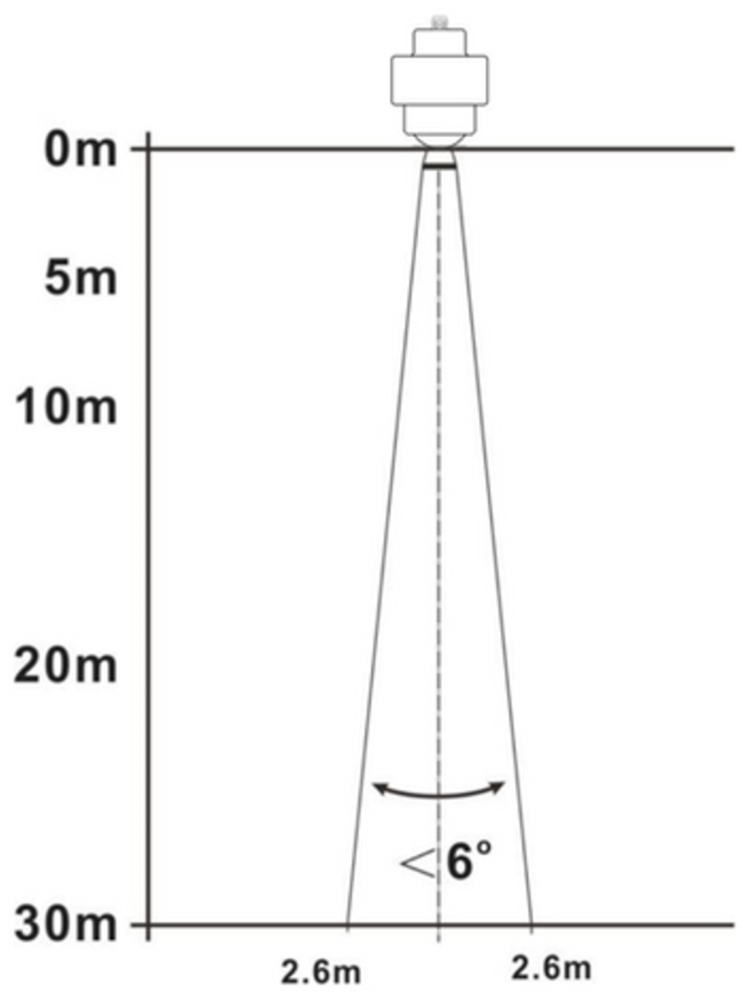